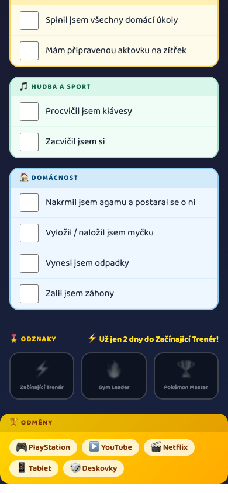
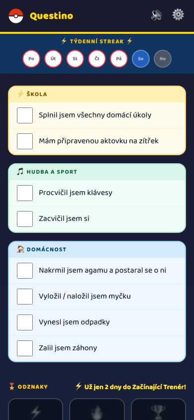
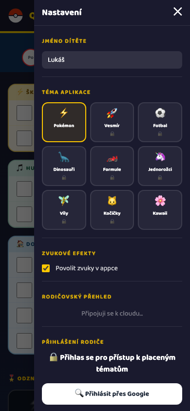

Questino je appka, která proměňuje každodenní povinnosti v dobrodružství.
Pro děti i rodiče.
Začít →


Jednoduše nastavíš úkoly a odměny a appka je připravená.
Každý den dítě plní úkoly a buduje streak. Gamifikace motivuje přirozeně.
Za splněné dny dítě získává odměny které jsi vybral. Žádné hádky.
Jasná pravidla a odměny snižují konflikty o povinnosti.
Každodenní rutina buduje samostatnost a zodpovědnost.
Začni ihned, email pouze pro zálohu dat.
Žádná registrace. Funguje v prohlížeči na tabletu i mobilu.
Začít →